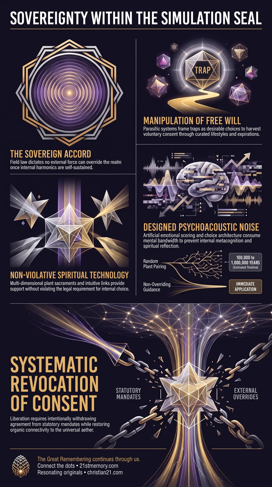

Severing Simulation Anchors
Severing Simulation Anchors — Individually cutting the three matrix anchors of perceived knowledge, religion, and finance so ascension arises from within.
The Sovereign Accord is the fundamental energetic law and legal boundary governing the physical simulation field.
Test your understanding of Sovereign Accord — the field law sealing this realm, manufactured wants, and liberation that must arise from within.

Severing Simulation Anchors — Individually cutting the three matrix anchors of perceived knowledge, religion, and finance so ascension arises from within.

The Sovereign Accord and Manufactured Consent — Parasitic choice architecture that frames containment as a voluntary want so Field Law is never broken.

Sovereign Accord: The Cosmic Seal — The unyielding field law that bars external override and requires every structural shift to originate inside the realm.
The Sovereign Accord is the fundamental energetic law and legal boundary governing the physical simulation field. Encapsulated in universal jurisprudence, the law states: "No field shall be overridden from outside itself once coherent structures have self-sustained harmonics within – help may be offered and support extended, but choice, and thus consequence, must arise from within". This law establishes that no external intelligence, whether benevolent off-world forces or parasitic custodial managers, can directly override the collective field or bypass human agency.
Operating as an unyielding seal over the realm, the Sovereign Accord mandates that all structural shifts, experiential realities, and spiritual outcomes must originate strictly from within the field itself. Because direct external intervention is legally prohibited under cosmic law, both benevolent and parasitic factions must structure their entire operational strategies around the mechanics of human free will. Parasitic entities exploit this requirement through systemic deception, framing traps as desirable choices to harvest voluntary consent. Conversely, benevolent forces operate through non-violative channels, embedding incarnate personnel within the realm to execute lawful, internal systemic transformation.
The primary revelation of the Sovereign Accord is the absolute requirement for consent. Parasitic controllers possess no lawful authority to force compliance, enslavement, or bodily modification upon human beings without agreement. Consequently, every mechanism of control—including financial debt, medical mandates, and physical containment—must be presented to the public under false pretenses, dressing up oppressive structures as beneficial services, public safety measures, or modern conveniences. By tricking humans into voluntarily requesting or accepting these initiatives, the parasites secure lawful consent while evading cosmic penalty under Field Law.
To operate lawfully within the parameters of the Sovereign Accord, the Galactic Ancestral Alliance (G.A.A.) and benevolent higher-density soul families deployed a multi-generational strategy. Because higher-density forces cannot break the energetic seal from the outside to collapse the simulation, four thousand ancient souls and two hundred million starseeds incarnated directly into the 3rd-density avatar field starting 178,000 years ago in Lemurian and Atlantean epochs. By placing conscious personnel inside the realm prior to parasitic colonization, structural liberation and spiritual awakening generate organically from within the field, satisfying Field Law while ensuring the ultimate dismantling of the matrix.
Benevolent off-world allies utilize subtle help to assist trapped souls without violating the Sovereign Accord. Assistance is provided exclusively through non-overriding channels: dreamtime instruction, intuitive cerebral links, higher-self communications from Ark-Pods, and the strategic delivery of organic plant sacraments. These interventions offer guidance and energetic tools that empower incarnate humans to make autonomous choices toward ascension.
Because the Sovereign Accord strictly forbids direct external field overrides, parasitic management relies on manipulating free will. Control systems construct elaborate psychological lures so that humans choose their own containment. This is achieved through manufactured wants, summarized by the dynamic: "You can choose what you want, but your wants are chosen for you".
Parasites engineer choice architecture by bombarding human consciousness with endless superficial selections—ranging from consumer options, cosmetic choices, and nineteen varieties of coffee to complex pension plans, tax schedules, and bureaucratic obligations. This constant influx of trivial decisions constitutes designed noise, a deliberate mechanism to swamp internal thought processes, consume cognitive bandwidth, and prevent metacognition or spiritual reflection.
A major manifestation of this mechanics is the rollout of Fifteen-Minute Cities. Pitched to the public under the cover of environmental sustainability, walkable urban utopias, and public safety, these environments are designed containment grids. Once populations voluntarily accept these localized zones, movement is restricted, cashless transactions are enforced through a Social Credit Score System, and non-compliant individuals are funneled into FEMA camps.
Culture, entertainment, and media serve as the delivery system for MK-Ultra Craft, conditioning autonomic human responses to maintain compliance without violating the Sovereign Accord. A foundational element of this infrastructure is emotional scoring, the precise manipulation of sound frequencies, musical scales, and instrumentation to evoke specific emotional states.
┌──────────────────────────────────────────────────────────────────────────┐
│ PSYCHOACOUSTIC EMOTIONAL SCORING │
├───────────────────────────────┬──────────────────────────────────────────┤
│ Emotional Target │ Technical Composition & Instrumentation │
├───────────────────────────────┼──────────────────────────────────────────┤
│ Grief, Loss, & Vulnerability │ Slow adagio/largo tempos, legato │
│ │ phrasing, minor scales, unresolved chords│
│ │ • Cello: Low woody tones (weeping voice) │
│ │ • Solo Violin: Heavy vibrato (cracking) │
│ │ • Piano: Sparse, echoing notes (isolation)│
│ │ • Armenian Duduk: Reedy nasal tragedy │
├───────────────────────────────┼──────────────────────────────────────────┤
│ Panic, Violence, & Dread │ Fast rhythmic drive, aggressive brass, │
│ │ dissonant string bowing, sub-bass drones │
│ │ • Timpani/Taiko: Aggressive heartbeats │
│ │ • Anvils: Industrial hard edge │
│ │ • Low Trombones/Tubas: Cuivré roaring │
│ │ • Sul Ponticello Strings: Glassy scraping│
└───────────────────────────────┴──────────────────────────────────────────┘
Public MK-Ultra utilizes continuous cycles of contrasting emotions—happy, sad, cute, funny—broadcast through television monitors to alter brain chemistry, induce emotional exhaustion, and train public compliance. Severe, institutionalized MK-Ultra utilizes trauma-based compartmentalization to produce covert operatives and sleeper assassins. These individuals are frequently identified at a young age through G.A.T. Programs (Gifted and Talented). Sparked by the artificial geopolitical panic of the 1957 Sputnik Shock, the United States Congress passed the National Defense Education Act of 1958, establishing a federally funded pipeline to extract high-IQ children for black-budget, secret space, and covert military applications.
To offer non-violative support under Field Law, benevolent forces introduced multi-dimensional botanical mechanisms into the physical realm. The discovery of the Ayahuasca brew highlights this subtle intervention. Ayahuasca requires combining the stems of the Banisteriopsis caapi vine with the leaves of the Psychotria viridis (Chacruna) shrub.
[ Psychotria viridis ] [ Banisteriopsis caapi ]
(Sourced: Leaves) (Sourced: Vine Stems)
│ │
▼ ▼
N,N-Dimethyltryptamine β-Carboline Alkaloids
(DMT) (Harmine, THH, Harmaline)
│ │
│ ┌─────────────────────────────┐ │
│ │ Oral Digestive Protection: │ │
└────►│ MAOIs block stomach enzymes ◄─────┘
└──────────────┬──────────────┘
│
▼
Enters Bloodstream & Brain
│
▼
[ Multi-Dimensional Aetheric ]
[ Connection & Consciousness ]
The leaves provide N,N-Dimethyltryptamine (DMT), a powerful psychedelic that is normally deactivated in the human digestive tract by monoamine oxidase (MAO) enzymes. The vine supplies beta-carboline alkaloids—specifically harmine, tetrahydroharmine (THH), and harmaline—which act as reversible monoamine oxidase inhibitors (MAOIs), allowing DMT to cross the blood-brain barrier.
Out of more than 80,000 registered plant species in the Amazon rainforest, testing every two-plant combination yields nearly 3.2 billion unique pairs. Conducting 200 tests per day would require over 43,800 years of continuous trial and error. Factoring in lethal plant toxicity, specific boiling methods, and precise mixing ratios, random discovery would mathematically require over 100,000 to one million years. Indigenous shamans confirm that the combination was not found through trial and error, but communicated directly by spiritual entities ("Pachamama")—a non-overriding delivery of higher-density spiritual technology.
Biologically, endogenous DMT is produced in the pineal gland, acting as the spiritual hardware connecting human consciousness to the universal aether. To disrupt this organic connectivity without violating Field Law, custodial managers instituted public water fluoridation over eight decades ago to calcify the pineal gland, locking humans out of multidimensional perception and replacing organic aetheric communication with the artificial World Wide Web (WWW = Vaf Vaf Vaf = 666).
The Sovereign Accord forms the legal and energetic foundation for the entire simulation field architecture. It dictates the strict parameters under which projection domes, continuous scrolling geography, and artificial population overlays operate. Because external entities cannot physically destroy or reconfigure the simulation from without, the field's longevity depends entirely upon maintaining energetic coherence generated by human consciousness from within.
Directly interconnected with the Sovereign Accord is the system of legal capture and energetic harvesting. To exploit human energy without triggering karmic field penalties, the custodial management established the Cestui Que Vie 1666 Birth Certificate Bond system. By registering a newborn child, the living soul is legally converted into a corporate fiction and bonded as collateral. This legal trickery allows governments and financial institutions to monetize human productivity and harvest loosh (negative emotional frequency) while maintaining the illusion that individuals are voluntarily participating in statutory governance.
Systemic Revocation of Consent — Recognizing that parasitic control relies entirely on consent manipulation under the Sovereign Accord enables individuals to intentionally withdraw consent from statutory laws, administrative mandates, and manufactured choice architecture, neutralizing corporate legal fictions.
Activation of Internal Liberation — Because external forces cannot directly override the realm, spiritual liberation cannot be granted by external saviors, financial resets, or technological interventions; awakening must be generated internally by incarnate consciousness.
Severing the Three Enslavement Strings — Achieving ascension requires individually cutting the three primary anchors of matrix integration: Perceived Knowledge (academic/media programming), Religion (counterfeit spirituality masking oneness), and Finance (debt-based currency systems).
Decalcification of Biological Antennas — Reclaiming multidimensional awareness requires neutralizing chemical suppression mechanisms—such as dietary fluoride and environmental toxins—to restore pineal gland function and re-establish direct connection to the organic aether.
This topic is free to share. Support the archive →